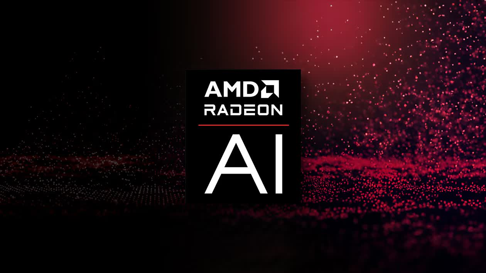
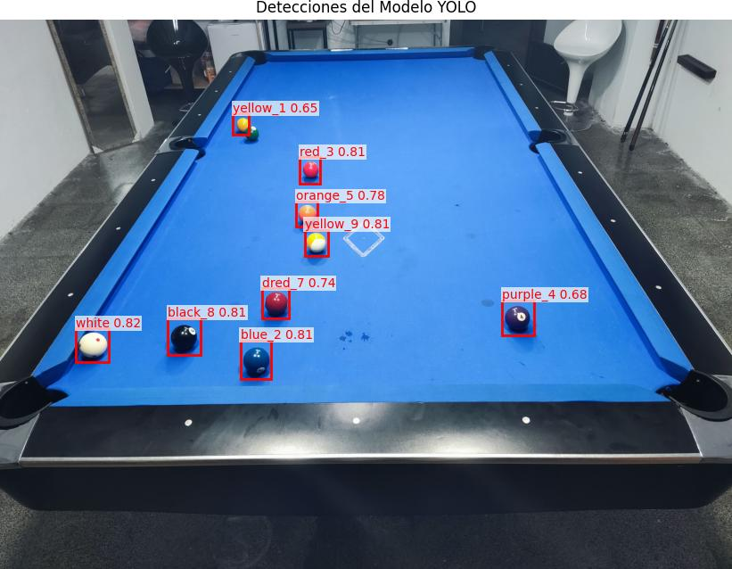

Optimización con GPU y YOLOv11
Un salto cualitativo: activamos la GPU local, experimentamos con la arquitectura YOLOv11 y aplicamos técnicas avanzadas para combatir el sobreajuste.
De la Fuerza Bruta a la Estrategia Inteligente
Desafío
A pesar de entrenar más épocas, el modelo anterior se estancaba en un máximo de rendimiento y mostraba claro sobreajuste (overfitting), memorizando los datos en lugar de generalizar.
Propuesta
Combatir el sobreajuste con técnicas de regularización: activar la aumentación de datos agresiva (MixUp), implementar Early Stopping y probar una arquitectura más moderna (YOLOv11n).
Acciones
- Configuración de GPU local con AMD ROCm.
- Entrenamiento con YOLOv11n y `imgsz=640`.
- Activación de `augment=True` y `mixup=0.1`.
- Uso de `patience=20` para Early Stopping.
Resultados
Un modelo notablemente superior, con mejor rendimiento (`mAP50 de 0.77`) y un sobreajuste mucho más controlado. El entrenamiento se detuvo eficientemente en la época 88 de 200.
Proceso de Entrenamiento Optimizado
Paso 1: GPU y Aumentación Agresiva
El hito principal fue la activación de la GPU AMD Radeon RX 6800 XT a través de ROCm, reduciendo los tiempos por época de ~40 minutos a ~1.5 minutos. Se aplicaron técnicas avanzadas de aumentación para mejorar la generalización del modelo.
Configuración de Entrenamiento Mejorada
# Entrenamiento con Early Stopping y Aumentación
results = model.train(
data=data_yaml_path,
epochs=200, # Un número alto
imgsz=640,
batch=32,
patience=20, # Parada temprana
augment=True, # Aumentación activada
mixup=0.1, # Técnica de regularización
hsv_s=0.9 # Mayor variación de saturación
)Paso 2: Análisis Cualitativo de Errores
Tras obtener un modelo más robusto, el enfoque cambió de la simple mejora de métricas al análisis cualitativo. Se realizaron pruebas en imágenes nuevas para identificar patrones de error específicos (bolas no detectadas, clasificaciones erróneas) y guiar la siguiente fase de recolección de datos.
Ejemplo de Inferencia con el Modelo Mejorado
Conocimientos y Conceptos Aplicados
Regularización
Conjunto de técnicas (como MixUp, aumentación de datos) utilizadas para prevenir el sobreajuste y ayudar al modelo a generalizar mejor a datos nuevos.
Early Stopping
Método que detiene el entrenamiento automáticamente cuando el rendimiento del modelo en un set de validación deja de mejorar, ahorrando tiempo y evitando el sobreajuste.
Análisis de Errores
Proceso manual y cualitativo de inspeccionar las predicciones incorrectas del modelo para entender sus debilidades y guiar futuras mejoras en el dataset.
YOLOv11
Una evolución de la arquitectura YOLO, utilizada en esta fase para experimentar con modelos más recientes en busca de un mejor equilibrio entre velocidad y precisión.
Compromiso Precisión-Recall
El dilema de ajustar un umbral de confianza: un umbral alto aumenta la precisión (menos errores) pero baja el recall (menos detecciones), y viceversa.
Curación de Dataset
Proceso iterativo de mejorar un conjunto de datos añadiendo ejemplos específicos que aborden las debilidades detectadas en el modelo (e.g., oclusiones, reflejos).
Evolución del Entrenamiento Mejorado
Evolución de las Métricas mAP
El modelo muestra una mejora continua hasta que el rendimiento se estabiliza. El entrenamiento se detuvo en la época 87 gracias a Early Stopping.
Control del Sobreajuste (Pérdidas)
Las pérdidas de validación (líneas discontinuas) siguen de cerca a las de entrenamiento, mostrando que el sobreajuste está mucho más controlado.
Rendimiento del Mejor Modelo por Clase (mAP50)
Precisión del modelo de la época 67. Se observa un gran rendimiento en bolas como `green_6` y `yellow_1`, y áreas de mejora en `orange_5` y `purple_12`.
Glosario de Términos
Conclusiones y Siguientes Pasos
Conclusiones Clave
- El ciclo de Probar → Analizar Errores → Mejorar Datos → Re-entrenar es la estrategia más efectiva para construir un sistema de IA robusto.
- Las técnicas de regularización como la aumentación de datos y el early stopping son cruciales para controlar el sobreajuste y alcanzar un mayor rendimiento.
- Incluso con un buen modelo, la selección de un umbral de confianza (`conf`) adecuado es clave para balancear la precisión y la cantidad de detecciones en la aplicación final.
Próximos Pasos
1. Curación del Dataset
Basado en el análisis de errores, añadir nuevas imágenes al dataset que incluyan específicamente los casos difíciles: oclusiones, reflejos y colores ambiguos.
2. Re-entrenamiento Iterativo
Lanzar un nuevo ciclo de entrenamiento con el dataset mejorado, partiendo del `best.pt` actual para un ajuste fino (fine-tuning).
3. Desarrollar la Aplicación Final
Empezar a construir la aplicación final que utilizará el modelo para procesar un stream de vídeo y extraer las coordenadas de las bolas en tiempo real.